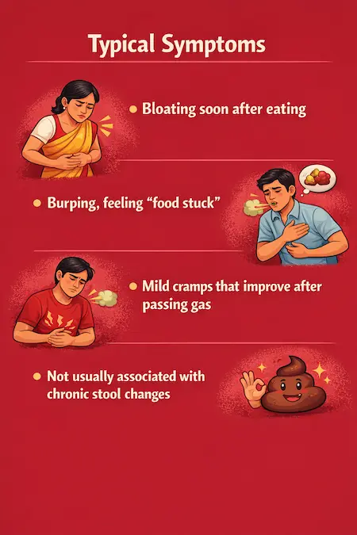
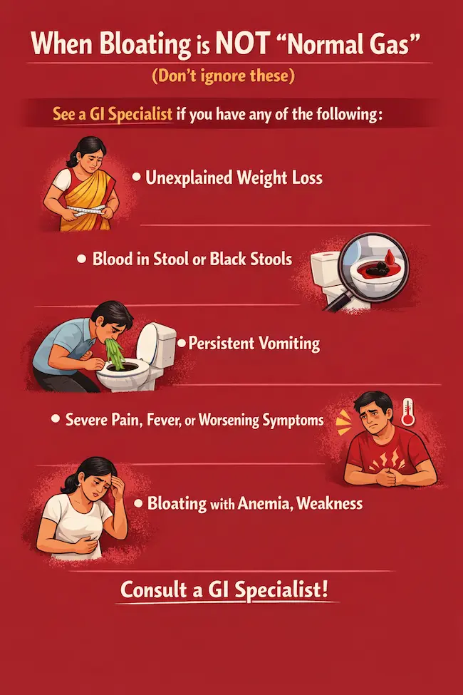
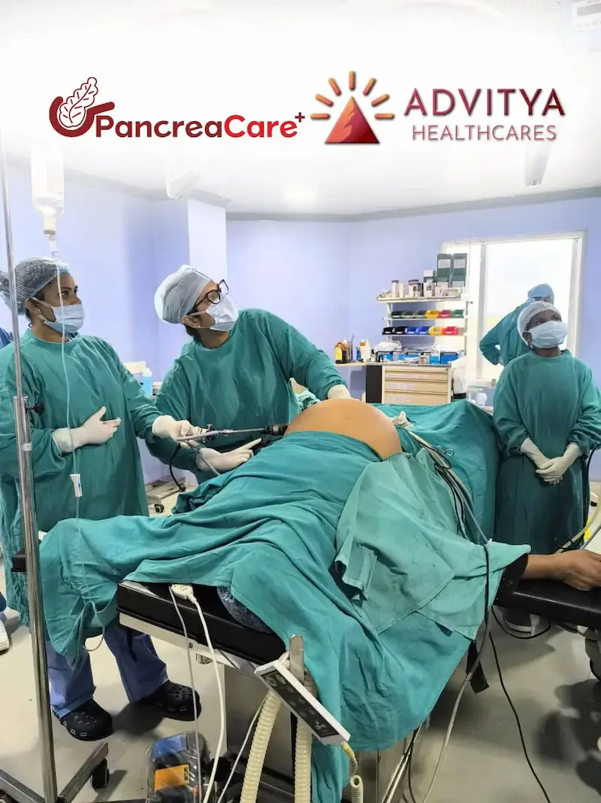

Bloating is one of the most common “everyday” problems in Kolkata—especially with irregular meal timings, late-night tea, street food cravings, and stress.
Most people label everything as “gas,” but the real cause is often one of these three:
- Simple Gas / Indigestion (diet + lifestyle related)
- Gastritis (stomach lining irritation/inflammation, sometimes due to acid or infection)
- IBS (Irritable Bowel Syndrome—gut-brain sensitivity + bowel pattern changes)
This guide helps you identify which bucket you’re likely in—so you stop guessing and start managing it correctly.
First: What does “bloating” actually mean?
People use “bloating” for different sensations:
- Fullness after eating (stomach feels heavy)
- Visible abdominal swelling (tight waistband by evening)
- Burping and upper gas (more in chest/upper belly)
- Lower belly gas with stool changes (constipation/loose motions)
- Burning + sour burps (acid-related)
Where you feel it + when it happens is the biggest clue.
Quick Kolkata Self-Check (30 seconds)
Answer these honestly:
A) Mostly upper belly? (above the navel)
- More burping than passing gas
- Burning/acidic sensation
- Worse with tea/coffee, spicy food, late dinner
➡️ Likely Gastritis / Acid-related
B) Mostly lower belly? (below the navel)
- Tightness by evening
- Stool changes (constipation/diarrhea)
- Worse with stress, anxiety, irregular routine
➡️ Likely IBS
C) Mostly after a specific meal?
- Happens after heavy meals, oily food, fast eating
- Gets better with walking, time, simple diet
- No consistent stool pattern change
➡️ Likely Simple Gas / Indigestion
Now let’s break it down properly.
1) Simple Gas / Indigestion: The “food + speed + timing” problem

Common Kolkata triggers
- Fast eating (office lunch in 10 minutes)
- Overeating at night (biryani/roll + tea)
- Too much fried food (telebhaja, chop, pakora)
- Excess carbonated drinks
- Too much onion/garlic for sensitive stomachs
- Skipping meals, then heavy dinner
Typical symptoms
- Bloating soon after eating
- Burping, feeling “food stuck”
- Mild cramps that improve after passing gas
- Not usually associated with chronic stool changes
What helps (simple + effective)
- Eat slower (put spoon down between bites)
- 10–15 min walk after meals
- Lighter dinner, earlier dinner
- Reduce oily + deep-fried foods for 7 days
- Try smaller portions of known gas-producers (peas, cabbage, cauliflower)
If this fixes it, you were likely dealing with indigestion-related gas.
2) Gastritis: When the stomach lining is irritated
Gastritis is not just “acidity.” It can be triggered by spicy foods and stress—but also by painkillers (NSAIDs), alcohol, smoking, or H. pylori infection in some cases.
Typical symptoms
- Burning or discomfort in upper abdomen
- Nausea, reduced appetite
- Sour burps, heartburn, chest discomfort
- Bloating feels like “tightness” in the upper stomach
- Sometimes worse on an empty stomach (or after very spicy food)
Red flags that point more toward gastritis than “gas”
- You feel better temporarily after antacids—but it keeps returning
- Night-time acidity affecting sleep
- Frequent burning sensation, not just fullness
What helps (do this for 7–10 days)
- Avoid late-night tea/coffee
- Cut down very spicy gravies, vinegar sauces, heavy tomato at night
- Don’t lie down immediately after meals (give 2–3 hours)
- Avoid self-medicating painkillers without guidance
- If symptoms persist >2–3 weeks, you may need evaluation (sometimes tests for H. pylori, or endoscopy based on symptoms)
3) IBS: When the gut becomes “extra sensitive” (and stress matters)
IBS is very common, and many people live with it for years thinking it’s “gas.” IBS is not dangerous like cancer, but it can seriously affect quality of life and needs structured management.
Typical IBS pattern
- Bloating that often builds up by evening
- Lower belly discomfort
- Symptoms linked to stress, anxiety, irregular sleep
- Bowel pattern changes, such as:
- IBS-C: constipation, hard stool, incomplete evacuation
- IBS-D: loose motions, urgency
- IBS-M: mix of both
IBS clue (important)
If your bloating is consistently tied to stool pattern changes and stress, IBS becomes more likely than simple indigestion.
What helps IBS (practical Kolkata-friendly steps)
- Fixed meal times (even on busy workdays)
- Identify your triggers: milk, excess wheat, legumes, onions, some fruits, spicy oily street food
- Increase soluble fiber gradually (not sudden raw salads)
- Hydration + regular movement
- If constipation is present: don’t ignore it—constipation itself causes major bloating
- Consider guided dietary approach (like low-FODMAP style guidance) under professional supervision
The easiest way to tell: “Location + Timing + Toilet”
Use this simple 3-point method:
- Location
- Upper belly → more gastritis/acid
- Lower belly → more IBS/constipation-related
- Timing
- Immediately after food → more indigestion
- On empty stomach or late-night burning → more gastritis
- Builds through the day, stress-related → more IBS
- Toilet pattern
- Normal stool daily, no change → more simple gas
- Constipation/diarrhea pattern → more IBS
When bloating is NOT “normal gas” (don’t ignore these)
See a GI specialist if you have any of the following:

- Unexplained weight loss
- Blood in stool or black stools
- Persistent vomiting
- Severe pain, fever, or worsening symptoms
- Bloating with anemia, weakness
- Symptoms waking you at night frequently
- New symptoms after age 40–45 that persist
- Family history of GI cancers or inflammatory bowel disease
These don’t mean something serious is guaranteed—but they do mean you should not self-treat for months.
What to do next (simple plan)

If you suspect simple gas/indigestion:
Try a 7-day reset: early dinner + low oil + slow eating + walking + reduce trigger veggies in large portions.
If you suspect gastritis:
Stop late-night tea/coffee + reduce spicy/oily food + avoid painkiller overuse + get evaluated if it keeps returning.
If you suspect IBS:
Track symptoms for 2 weeks (food + stress + stool pattern). IBS improves massively when treated with a structured plan—not random “gas tablets.”
Consult support (PancreaCare by Advitya Healthcares)

If bloating is recurring, affecting your routine, or you’re confused between gas vs gastritis vs IBS, it’s worth getting a proper evaluation rather than trial-and-error.
PancreaCare by Advitya Healthcares offers GI-focused consultation and structured guidance for digestive symptoms. If you’re in Kolkata, you can consider planned consultation and follow-up guidance (including reports review) so you get clarity and a long-term plan.
Have a question this article does not answer?
Send us your reports. A specialist reviews them before you travel, so the first visit begins with a plan rather than a repeat test.